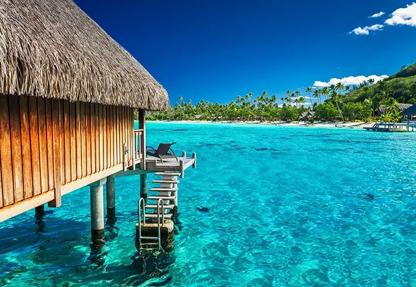

Destino: Bali
Uno de los sitos mas preciosos del mundo!
Descripción:Bali, situada entre Java (al oeste) y Lombok (al este) es una de las islas más pequeñas de Indonesia, con únicamente 150 kilómetros de largo y 112 en su punto más ancho (5700 km2) Leer Más>
Destino: Paris
PARÍS, CAPITAL DEL SIGLO XIX!

Descripción: Capital de Francia y de la región que ocupa, la Isla de Francia, París tiene una población de casi doce millones de habitantes, la más grande de Europa, y una superficie de 14.518 kilómetros cuadrados en zona urbana. Está situada al norte de Francia, concretamente al norte de la gran curva del río Sena. Leer Más>
Destino: Leavenworth
Leavenworth es un paraíso para los amantes de las actividades al aire libre...

Descripción:Las Montañas Cascade que se vislumbran en las cercanías son la puerta de entrada a todo tipo de aventuras: caminatas, esquí, ciclismo de montaña, rafting, flotación en SUP, campamentos fuera de pista... Leer Más>